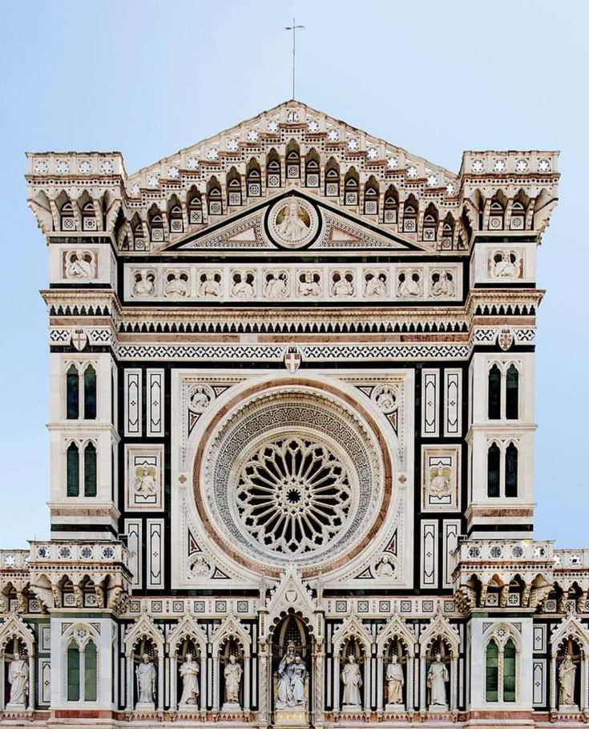

The architecture of the Cattedrale di Santa Maria del Fiore is defined by its massive basilica structure, combining Gothic traditions with early Renaissance innovation. The building follows a Latin cross plan with three naves and an emphasis on verticality and spatial depth. Its most iconic feature is the enormous dome designed by Filippo Brunelleschi, which remains one of the greatest engineering achievements in architectural history. The dome is a double-shell structure built without scaffolding, using a herringbone brick pattern to ensure stability. Internal chains of stone and iron were integrated to resist outward thrust, eliminating the need for external flying buttresses typical of Gothic cathedrals. The exterior is covered in polychrome marble panels in white, green, and pink, creating geometric patterns that reflect the artistic style of Florence. Inside, the space is more austere, directing attention upward toward the dome, which is crowned by a lantern that allows natural light to enter and stabilize the structure.